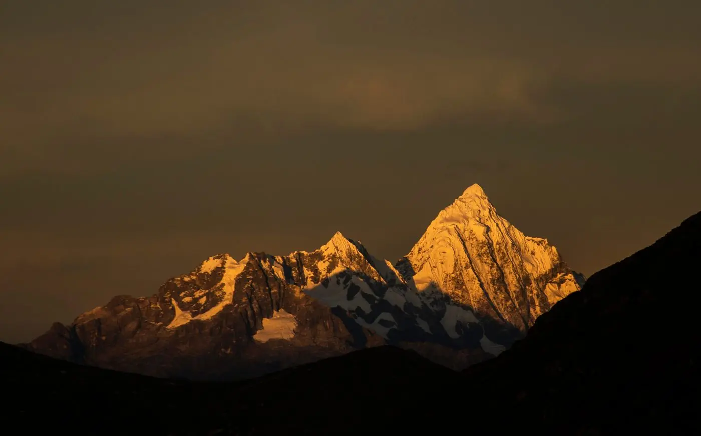

By Vanessa Yana Kuntur · Published 28 November 2026
What does karpay mean?
Karpay is a Quechua word that is commonly translated as an initiation or a rite of passage in Andean traditions. It marks a step on a path of learning, rather than an end point. Different communities and teachers describe it in different ways, so this article keeps to the general picture.

Energy and lineage
In many teachings, a karpay is described as a transmission. A teacher or lineage holder, who received their own initiations from those who came before, passes on a form of energy connected to that lineage. The idea of lineage matters here: the rite is understood as part of a chain of relationships between teachers and students, and between people and the places and ancestors they honour.
What actually happens in a karpay is not the same everywhere. It may involve offerings, prayer, quiet time and the guidance of an experienced teacher. Details depend on the lineage and the teacher, and some elements are traditionally kept private within the community that holds them.
Why people seek a karpay
People come to a karpay for different reasons: to deepen a relationship with Andean tradition, to mark a stage in their studies, or to follow a path of service to their community. It is usually approached as a commitment to ongoing learning and respect, not as a single event or a shortcut. Because a karpay is a spiritual and cultural rite, no particular outcome should be expected from it.
Mesa and khuyas
Two words come up often when people talk about initiation.
- A mesa (Spanish for “table”) is, in Andean practice, usually a bundle of cloth that holds a paqo’s sacred objects. It is often used as a portable altar for offerings and ceremony.
- Khuyas are small stones, often kept in a mesa. They are generally understood as sacred objects carrying meaning for a place or a lineage.
How a mesa is put together, how khuyas are received and what they mean differ between traditions and teachers. They are best learned from a teacher you trust, in context, and not from a general article.
How a karpay relates to paqo training
A karpay is often one part of becoming a paqo, not the whole of it. Alongside any initiation, training usually involves study of the Andean worldview, such as Ayni (reciprocity), Pachamama and the Apus, as well as practice over time and guidance from experienced teachers. You can read more about the role in What is a Q’ero paqo?
The shaman training page describes the education Vanessa offers in Q’ero Ñusta and Paqo traditions, including Karpay priesthood initiation. A karpay is a spiritual and cultural rite. It is not a medical or professional qualification.
Questions worth asking a teacher
If you are thinking about an initiation, it is reasonable to ask questions first:
- Who did the teacher learn from, and what lineage do they belong to?
- What does the training or rite involve, and how long does it take?
- What is expected of you before and afterwards?
- What are the costs, and what is included?
A good teacher will be glad to talk these through. Take your time, and remember that the Q’ero and other Andean peoples are living communities. Approach their traditions with respect and in the spirit of Ayni.
About the author
Vanessa “Yana Kuntur” Black Condor is a Sydney-based practitioner of Inca medicine and Q’ero-inspired energy work. She has seven years of training and experience in South American ancestral medicines, including six years of study with the Apaza family at the Inca Medicine School in Cusco, Peru. She is a co-founder of the Paco Shaman Association, registered in 2022, and is certified by the Waira Qeros Peruvian Paco Shaman Association.
These sessions are spiritual and cultural practices, not medical or psychological treatment. If you are in crisis, call 000 or Lifeline on 13 11 14.